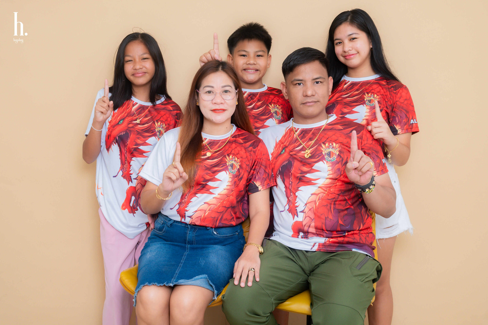
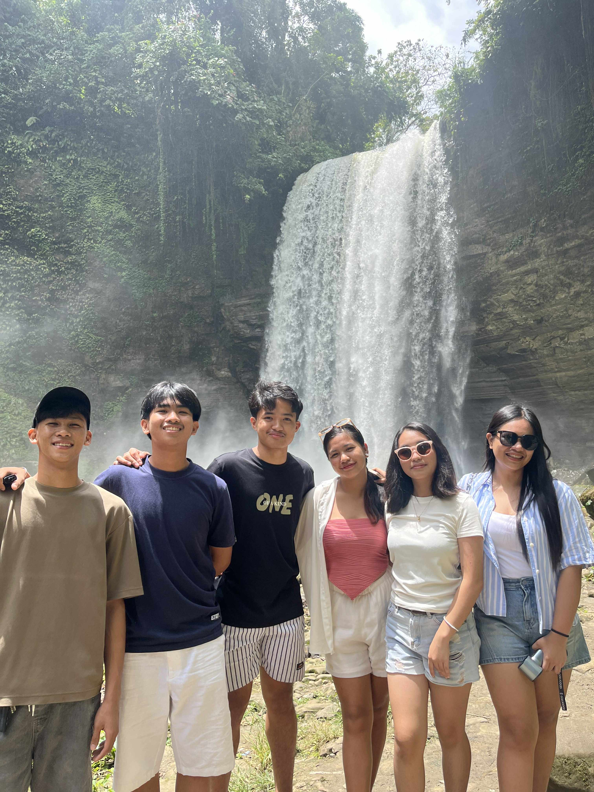

Welcome to My Website
About Me
My name is Alleyah I. Piga. I am 15 years old and I was born on May 1, 2010. I live in Tacurong City, Barangay Buenaflor, Province of Sultan Rudarat. I enjoy reading books sometimes like the 48 Laws by Robert Greene and listening to music whenever I am sad, happy or bored. Two things that make me unique are my love for singing and my love for learning new things every day because I am ready to learn. I also enjoy spending time being alone to get to know more about myself.
Family
I live in a happy family home with my family. My father's name is Jaypee B. Piga, and he works as a soldier. He is a loving, caring, and responsible father; he is the best father in the world. He was my first protector, on and off the battlefield. My mother's name is Shirley May I. Piga, and she is a pharmacist. She is my locked-in best friend; she taught me how to be brave and independent. I love my mom so much. I have two siblings, Chemaphy and Dione. They are special in my life because they make me happy every day. I am blessed because I have them, even though they get on my nerves sometimes. We love spending time together, especially during weekends. Our favorite bonding activity is watching cinema or going on a family picnic like eating samgyup. My family is my everything and the biggest source of my strength and inspiration.
Friends
I have many friends, but my closest ones are Vinesse, Vienne, and Carlo. They are very special to me because they are always there when I need them. We love to play and laugh together. I am thankful to have such loyal and fun friends.
Interest & Hobbies
Some of my favorite hobbies include reading and singing. I also enjoy watching Chinese and Korean dramas. I am interested in learning how to cook and bake. When I grow up, I want to be a lawyer winning someone's freedom, and I hope my hobbies will help me prepare for it. Doing the things I love makes me feel better and relaxed.
School
I go to Notre Dame of Tacurong College, which is in Tacurong City. I am currently in 10th grade. My classmates are fun, kind, and friendly. My favorite subjects are English and Music because I love reading and listening to music. My teachers are kind and patient but strict at the same time. My class schedule is usually from 7:30 AM to 4:00 PM.